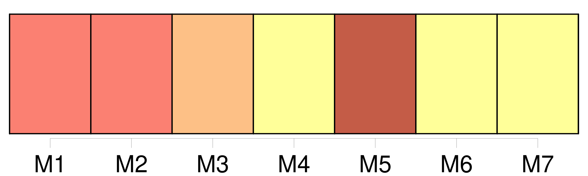
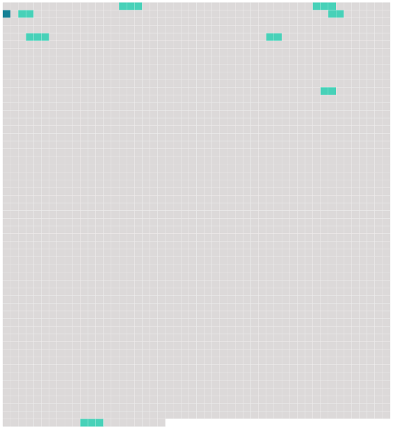

Longueur nb maillons : 9 mentions |
 |
… lorsque je lisais l'histoire du « Nautilus », je rêvais d'habiter [une ville sous-marine] , avec un petit peuple de mon choix ; la terre avec toutes ses misères me semblait un domaine trop mesquin. [Une ville sous-marine] , reprit Roger en s'exaltant, [ce] serait [l'idéal]
» [1 phrases] Il ne serait pas si difficile de construire d'autres sous-marins, que nous pourrions relier entre eux par des couloirs-tubes, détachables à loisir ; quand l'un des sous-marins voudrait remonter à la surface, il n'aurait qu'à se détacher des autres ; si [la ville entière] avait quelquefois, la fantaisie d'aller faire une expédition chez les terriens, on n'aurait encore qu'à détacher les tubes, et chaque habitant de [la ville] voyagerait ainsi avec toute sa maison. [11 phrases]
Tous connaissaient l'histoire du « Nautilus » et du capitaine Nemo, et au grand étonnement de Paul, lorsque Roger, sans beaucoup de préambules, proposa son plan de [ville sous-marine] , il ne rencontra pas l'opposition qu'il avait redoutée. [104 phrases] — « Depuis l'enfance, ajouta-t -il, je rêvais d'habiter [une ville sous-marine] , et mon rêve s'est réalisé …… |
 |
Il est possible de télécharger la ressource sur la page Ortolang |
Si vous avez des questions ou vous voyez des erreurs, merci d'envoyer un mail à silvia.federzoni89@gmail.com |